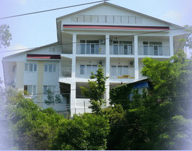
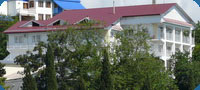
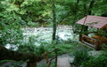

Лидия
Уважаемые дамы и господа!
Предлагаем Вам отдых на Черном море (г.Сочи, пос.ЛОО) в частной гостинице, расположенной в центре поселка ЛОО в 100 метрах от моря. Здание 2007 года постройки, трехэтажное, опоясанное галереями балконов с великолепными видами на море и на побережье.

Мы будем рады видеть Вас!!!

Номерной фонд состоит из номеров с удобствами (душ, туалет, умывальник) в номере и 1 блок на 2 номера с удобствами на блок. Все номера 2-х и 3-х местные. Часть 3-х местных номеров допускает подселение + 1 человека.
Если Вы организуете автобусные туры, имеем возможность в период с 01 мая до 25 октября принимать до 70 человек одновременно, по заранее согласованному графику заездов. А так же готовы принимать отдыхающих и по разовым заездам на свободные места. Нами выбрана ценовая категория: эконом-класс (т.е. отдых с удобствами за умеренную плату).
В радиусе 100-150 метров от нас имеется целый набор кафе и столовых, позволяющих всем желающим питаться без особых хлопот и огромных очередей. В случае групповых заездов возможна организация в одном из этих кафе планового питания по согласованному графику, добавив его стоимость в стоимость проживания.
Добраться до нас можно любым видом транспорта:
1. На автомобиле (по федеральной трассе Краснодар - Туапсе - Сочи до поселка ЛОО);
2. Поездом до станции ЛОО (у нас встают все поезда дальнего следования);
3. Самолетом до г.Адлер, затем на электричке или маршрутном такси до поселка ЛОО.
В случае группового заезда автобусами (от 10 человек) мы встретим Вас (по Вашему желанию) в г.Туапсе (г.Адлер) и доставим до места.
С поездов на станции ЛОО мы встретим и проводим до места каждого индивидуально.
Если Вас заинтересовали наши предложения, звоните и бронируйте номера заранее, не менее чем за 10 дней до прибытия, а в сезон с 1 июля до 1 сентября - за 20 дней (когда у Вас на руках уже имеются билеты).
ЛОО - уникальное место для отдыха!!!
Море, солнце, вечнозе-
ленная растительность,
южная экзотика позво-
лят Вам не только заго-
реть и укрепить здоровье, но и сокра-
тить долгую, хмурую осень и зиму, при-
близить долгожданную весну!
Одно из преимуществ перед другими по-
селками города Сочи (Вардане, Дагомыс, Якорная Щель, Головинка и т.д.) - на -
личие ж/д вокзала в центре поселка, где останавливаются все поезда дальнего следования.
Все для Вашего отдыха

В гостинице оборудована большая кухня - столовая, оснащенная всем необходимым для самостоятельного приготовления пищи, что позволяет значительно снизить затраты на питание (опыт сезона 2016 года показывает, что в этом случае стоимость питания на 1 человека примерно 200-250 руб/день. Сравните с декларируемой стоимостью 3-х разового питания в 500-700 руб/день на человека, включаемой в 2016 году в стоимость проживания многими гостиницами). Это еще один довод в пользу нашего предложения.
Преимущества нашей гостиницы
- умеренные цены при наличии удобств
в номерах;
- доброжелательный персонал;
- удобное расположенние (до моря 100 метров, до вокзала, автостанции, кафе, столовых, развлечений - 100-150 мет-
ров), позволяющее сделать отдых еще более комфортным;
- уборка в номерах;
- великолепный вид на море и побережье
с балконов и со смотровой площадки гостиницы;
- железнодорожный вокзал в поселке